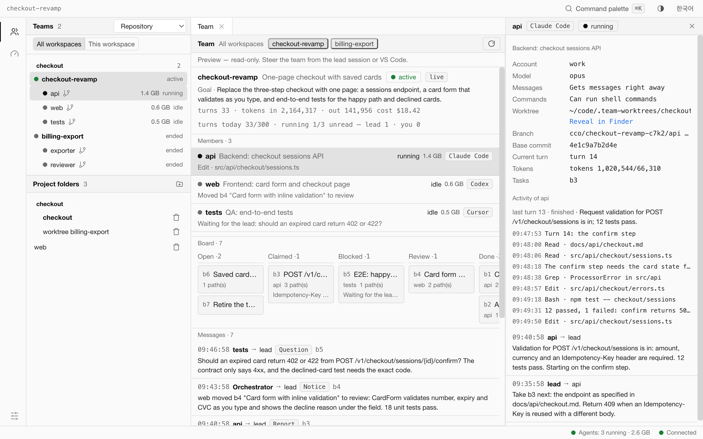
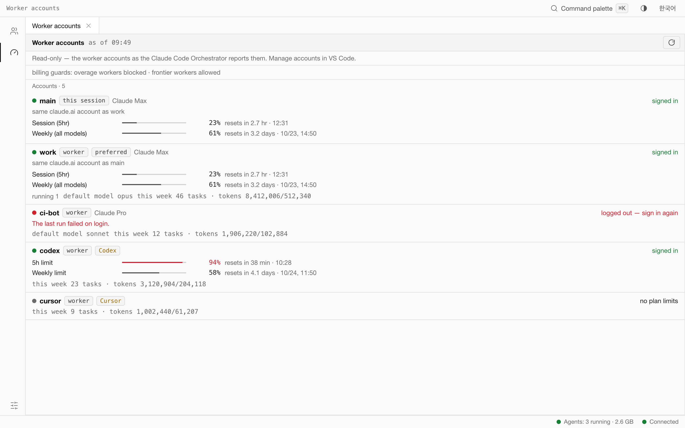
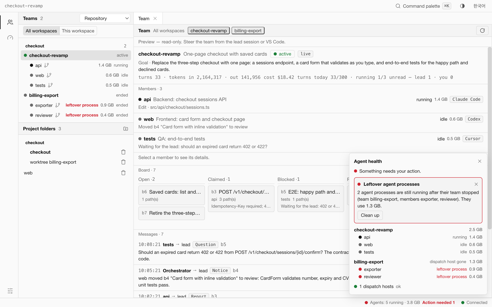
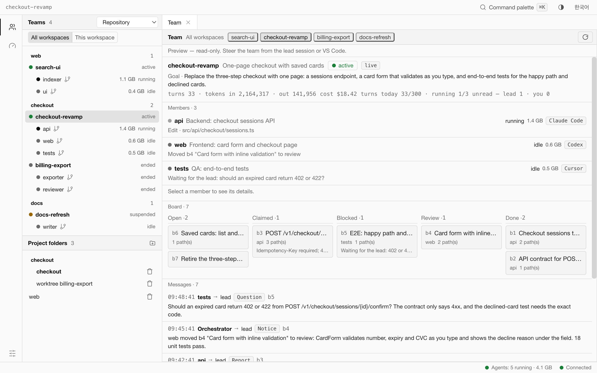

The work is spread out
A team's lead runs in one checkout and every member in its own worktree and branch, on different vendors and accounts. Finding out who is doing what means opening each of them.
Read-only preview macOS · Apple silicon Apache-2.0
Gilde Code is a desktop cockpit for the Teammate mode of Claude Code Orchestrator. It shows every team on your Mac — members with their branches and worktrees, the task board, messages and worker accounts — and supervises the agent processes behind them, with alerts that tell you what to do.
For engineering teams that run several coding agents in parallel: Claude Code, Codex, Cursor and Antigravity.
Local only. No telemetry. Distributed as source.
The problem
A team's lead runs in one checkout and every member in its own worktree and branch, on different vendors and accounts. Finding out who is doing what means opening each of them.
A team that stopped, or a turn that ended badly, can leave agent CLIs running. They keep their memory, and nothing points at them.
Several agents and the tools they start add up on one Mac. When memory gets short you need to know which agents are the largest, and how to stop them without breaking the team.
Capabilities
⌘1Team
Every team on this Mac, from all workspaces or only this one — found on its own, with no project folder to add. Each member shows its agent, branch and worktree and the engine's own state. Next to them: the team's task board and its messages.

⌘2Worker accounts
The accounts your members run on, exactly as the orchestrator reports them: usage windows with their reset times, cooldowns, login state, and which account is this session's own. Gilde computes none of it and changes none of it — accounts are managed in VS Code.

Status bar
A status-bar indicator counts the agents that are running and the memory they use, tools included. Its popover lists every team and member with its memory. When something is wrong, an alert says what happened and what to do next — often with the exact cco command to copy and run from your lead session.
cco team_member <member> --stopcco team_resume --team <team>cco team_member <member> --interruptA dismissed alert stays quiet for ten minutes unless it gets worse.

Group by repository
Teams are grouped by repository the way git sees it. The main checkout and its subfolders, a lead running in a linked worktree and the members' worktrees share one git common directory, so they collapse into one repository. Separate clones of the same origin collapse too.

How it works
cco, and the orchestrator's dispatch host for that session starts the members.Security and privacy
Gilde uses the dispatch host's read methods only, reads team files without writing them and asks git read-only questions. It does not create teams, post messages, change accounts or touch your repositories.
Everything it reads is on this Mac: files in your home folder, the orchestrator's local socket, git and the process table. The code has no telemetry, no analytics and no update check.
A member that uses too much memory, or a stuck turn, is reported with the cco command that stops it from your lead session. Gilde does not signal it: that would break the team's turn behind the engine's back.
Only leftovers are offered: agent processes that carry the orchestrator's team-member marker, whose team or turn is gone, seen on two checks in a row. You see a dry run first, and nothing is signalled unless the process's start time and its command line or marker still match.
Found a vulnerability? Report it privately: on GitHub, Security → Report a vulnerability, or by e-mail to toragonite@gmail.com. Please do not open a public issue for it.
Requirements
codesignNot supported by this build: Intel Macs (a Rosetta shell on Apple silicon included), Linux and Windows. The build pins one Node runtime, for macOS on arm64, and the process supervision reads macOS interfaces.
Build from source
There is no binary download. The preview is distributed as source, and these are the repository's own scripts.
Verified on macOS (Apple silicon)
git clone https://github.com/Toragonite/gilde.git gilde-code
cd gilde-codenpm ci
(cd src-tauri/sidecar && npm ci)The app and its sidecar have separate lockfiles.
npm run node:fetchDownloads Node v20.19.2 for darwin-arm64, checks it against the published SHA-256 and the hash pinned in scripts/fetch-node.sh, and ad-hoc signs it. A mismatch stops the build. Once installed, later runs do not touch the network.
npm run sidecar:buildBundles the sidecar and runs the check that no process is started outside its two supervised modules.
npm run tauri buildRuns steps 3 and 4 again first (they do nothing when their output is current), builds the frontend, compiles the app in release mode and ad-hoc signs the bundle. The first build takes several minutes. Add -- --bundles dmg for a disk image as well.
src-tauri/target/release/bundle/macos/Gilde Code.app
Drag it to Applications. An app you build yourself carries no quarantine attribute, so it opens without a Gatekeeper prompt.
For development: npm run tauri dev. The full guide, with tests and troubleshooting, is BUILDING.md in the repository.
Part of the stack
The VS Code extension and the cco command. Its Teammate mode lets a lead Claude Code session lead members across vendors and accounts, each in its own git worktree and branch.
A library with one adapter per agent CLI — Claude Code, Codex, Cursor and Antigravity — for structured runs: stream, resume, quota, cancel. Gilde's sidecar is built on it.
The desktop cockpit: teams, worker accounts, and the health of the agent processes on your Mac. Read-only in this preview.
FAQ
Yes. Gilde shows what the orchestrator's Teammate mode runs, so it needs Claude Code Orchestrator 2.0. Without a team the Team view is empty, and Worker accounts asks you to start a Claude Code session with the orchestrator. An older dispatch host cannot send the account list, and Gilde says so.
No. It asks git read-only questions with optional locks turned off, and it never writes team files. Gilde keeps its own settings and state in ~/Library/Application Support/com.toragonite.gildecode.
Not team members: for those it gives you the cco command to run from your lead session, or you use the Team view in VS Code. The one thing it can end is a leftover process after its team is gone — after a dry run, with your confirmation, and only if the process is still the one that was checked.
The ones Teammate mode runs members on: Claude Code, Codex, Cursor and Antigravity. Gilde shows the vendor and account of each member.
Not in this build. It is built and tested on macOS on Apple silicon; the bundled Node runtime is pinned to that platform and the process supervision uses macOS interfaces.
No. The code has no telemetry, no analytics and no update check, and the preview reads only local state and the orchestrator's local socket. Building it downloads packages and the pinned Node runtime once.
This preview is distributed as source only: there is no Developer ID–signed or notarized download and no auto-updater. You build the app on your own Mac with the steps above; to update, pull and build again.
Gilde Code is licensed under Apache-2.0. Claude Code Orchestrator and agent-mesh are MIT.